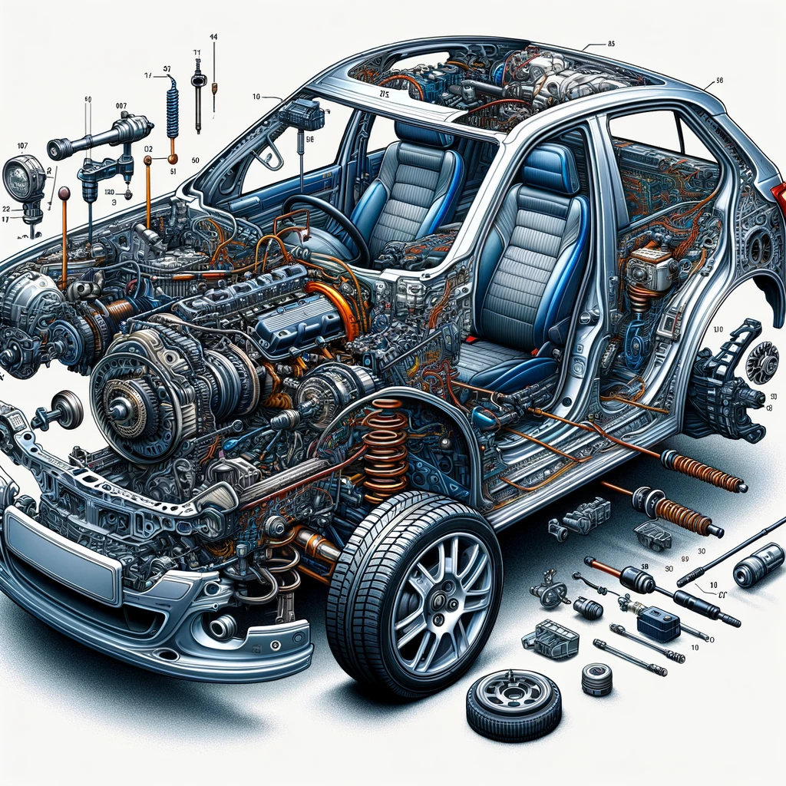

Abstraction: The Developer's Way of Thinking
The single most important idea that every developer must have is abstraction, a fundamental concept underlying all software systems, hardware architectures, and essentially, all complicated things.
Abstraction helps to manage the complexity of real world systems, to break down complex systems into simpler components and to allow both the creator and non-creators something to quickly understand "what this thing is". Abstraction is found in almost every aspect in the modern world, from software applications to hardware and even "non-technical" industries such as animated films. However, it is especially important to developers as they deal with and use this concept every day. Essentially, abstraction should be the second instinct of all developers.
What is "abstraction"?
Generally speaking, "to abstract" roughly means "to define what something is to someone, disregarding all irrelevant information", and that definition ("what something is") is called an abstraction.
Notice that some people may define "abstraction" differently, such as "the abstract nature that is common to multiple entities". Here, I'm splitting that definition into two parts: the "abstract nature" part is defined as abstraction; the "common to multiple entities" part is defined as "standards", which is a concept introduced in a later section.
According to the definition above, there are a few important questions to ask when abstracting something:
- What is the "thing" to be abstracted?
- Who is that "someone"? How will he/she/it interact with the "thing"?
- What is this "thing", in that "someone"'s view?
- What information are relevant? What information are not? I.e., What does that "someone" need to know about?
Notice that the answer to these questions are dependent to the "target audience" of the abstraction, i.e., the person (or the system) that will use the abstraction and interact with the "thing". If your audience changes, the "thing" might look different, relevant information might become irrelevant, and vice versa.
Abstraction is not meant for other people only; sometimes (actually most of the time), the target audience will be yourself who is designing and implementing the thing to be abstracted.
Although I gave a definition above, abstraction itself is an "abstract" idea which is very hard to define clearly, and there is no broadly-accepted definition. So, I will use an example to illustrate what abstraction really means.
An Example of Abstraction
 |
 |
|---|---|
When you're in a morning rush and you see a car, what first comes to your mind? Is it "I can drive this thing around", or chassis, engine, tires and fuel tanks?
I believe most people's view would be the former. Of course, the latter view is also important, but it is irrelevant to you at the moment: you're in a rush, so all that matters to you is that you can drive a car to get to your workplace fast.
Believe it or not, you have already created an abstraction in the example above. Let's break it down a little:
- Target of abstraction: The car.
- Target audience: You.
- What is this thing ("abstraction"): Something you can use to drive around and get to anywhere fast.
- Relevant information: You can drive this thing around. It's fast.
- Irrelevant information: It's made up of an engine, a fuel tank, a chassis, etc. It's 4.6 meters long and 1.6 meters tall, with a peak power output of 140 hp. Stuff like that.
The explanation above should be easy to understand: the target audience is you, and the only thing you need to know is that you can drive a car around, so that's the abstraction.
For workers at a car factory, however, the view would be different. The workers build cars; they do not need to know how to drive the car, but they do need to know the inner workings of a car so that they can build it. This time, we have:
- Target of abstraction: The car.
- Target audience: Factory workers.
- What is this thing ("abstraction"): Something made of an engine, a fuel tank, a chassis and a bunch of other stuff.
- Relevant information: Internal structures of a car.
- Irrelevant information: How to drive a car.
As you can see, abstraction depends on the target audience. As the target audience changes, the definition of the target of abstraction can change, and previously relevant/irrelevant information can become irrelevant/relevant as well.
Abstraction also depends on the role of the target audience. When you're driving a car, the abstraction of a car is "something you can drive"; when you're repairing a car, the abstraction starts including engines, tires, etc., because such details are now relevant to you.
Therefore, it is always important to identify the target audience and understand what it will do with the target of abstraction, and then decide what information are relevant/irrelevant and abstract the "thing" to the audience.
What does abstraction look like in the developer's world?
Although the car example illustrates the concept of abstraction, it seems to have nothing to do with developer stuff. Now, let's see what abstraction look like in real world software systems and code.
Here's a source code fragment from KonnyakuGPT, an AI-powered anime subtitle generator (there is no need to understand the code):
def simple_split_subtitles(subtitles: Sequence[srt.Subtitle], max_duration: datetime.timedelta) -> List[srt.Subtitle]:
"""Splits subtitles that are too long.
The splitting scheme is simple; sentences are LIKELY to be broken into pieces.
Args:
subtitles (Sequence[srt.Subtitle]): Original subtitles.
max_duration (float, optional): The maximum duration of each output subtitle, in seconds. Defaults to 10.
"""
new_subtitles = []
for subtitle in subtitles:
remaining_text = subtitle.content
current_start = subtitle.start
splitted_subtitles = []
while len(remaining_text) > 0:
expected_text_length = math.floor(max_duration / (subtitle.end - current_start) * len(remaining_text))
actual_text_length = min(expected_text_length, len(remaining_text))
item_text = remaining_text[:actual_text_length]
item_duration = len(item_text) / len(remaining_text) * (subtitle.end - current_start)
splitted_subtitles.append(srt.Subtitle(
index=len(new_subtitles) + len(splitted_subtitles),
start=current_start,
end=current_start + item_duration,
content=item_text
))
remaining_text = remaining_text[actual_text_length:]
current_start += item_duration
new_subtitles += splitted_subtitles
return new_subtitles
There is no need to understand what the code does and how it does its job for now. Basically, the code segment makes up a function (think of it as a tool you can use to do something) which can split up long subtitles into shorter ones.
You may have noticed that there is some human-readable text at the beginning, namely the following:
"""Splits subtitles that are too long.
The splitting scheme is simple; sentences are LIKELY to be broken into pieces.
Args:
subtitles (Sequence[srt.Subtitle]): Original subtitles.
max_duration (float, optional): The maximum duration of each output subtitle, in seconds. Defaults to 10.
"""
Such text is called a "docstring", which, as its name suggests, provides documentation for the function. Such a docstring serves as an abstraction to the user of the function, as it includes and only includes what the user needs to know: what the function does and how to use it. The rest of the function, i.e., everything after the docstring, are all irrelevant to the user even though they are the logic code that allow the function to work. The user only needs to know how to use the function; it does not care about how the function works internally.
Abstraction is very important in this scenario, because it allows the user of the function to quickly understand only the things that it needs to understand. Without the docstring, the only way to see what the function does is to read and understand the code. While this is possible, it is much more time consuming than reading the docstring, and a bigger problem is, if the logic code changes, users would need to change the way they use the function, which will result in a lot of code modifications. With abstraction however, no matter how the logic code changes, as long as it maintains the interface (i.e., what the function does and how to use it) defined in the abstraction, the users don't need to change how they use the function at all.
Abstractions are important not only to users of software systems, but to those who develop the system as well. When there are a lot of code involved in a software (e.g., KonnyakuGPT has roughly ~2,000 lines of Python code), it becomes hard to remember what each piece of code does. Without abstractions like docstrings, even you yourself will find it hard to understand the code you written previously; abstractions make it much easier to understand, organize and maintain the software you work on.
Congratulations! You have understood abstraction, which is a concept fundamental to all programming languages and software development processes. Next, we will take a look at hierarchy, which is a way to manage complexity and an idea used in every aspect of the developer's world.